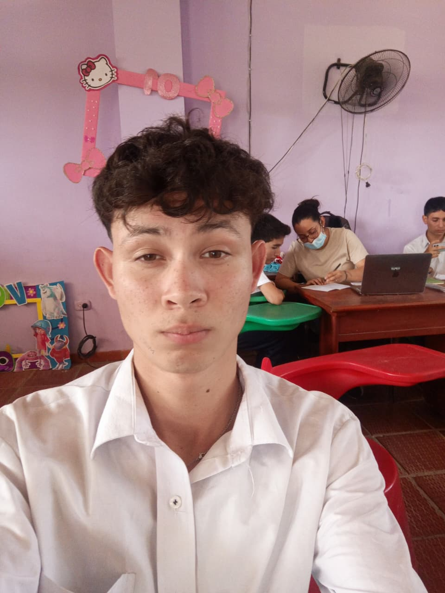
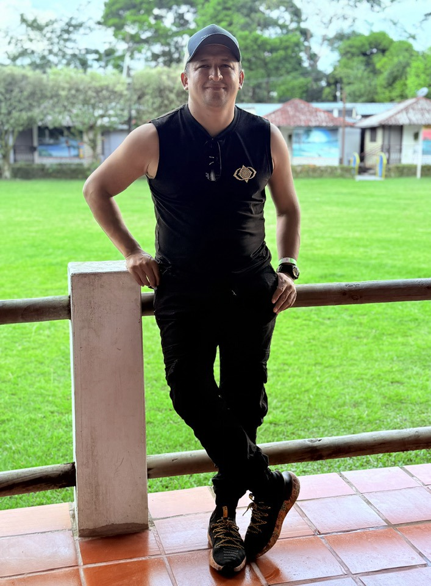

Desarrollo web, arquitectura de Inteligencia Artificial.
Especialista en inventario forestal y clasificación botánica.

Cálculo de biomasa y captura de carbono escolar.

Docente Asesor - Guía Técnico SENA
Mentor pedagógico en la Técnica de Conservación de Recursos Naturales.